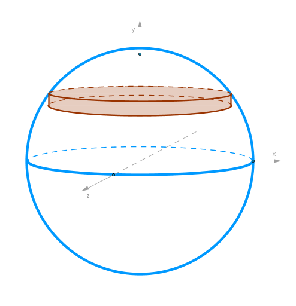
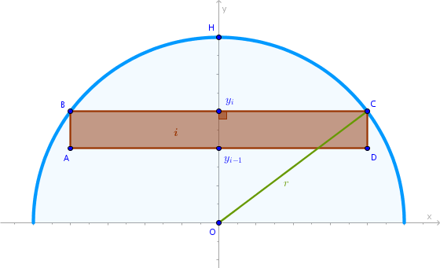

Problem
Find the volume of a sphere of radius \(r\).
Solution
Choose thin right circular cylinders as primitive parts to model the volume of a sphere with:
Please explain how the above primitive part was constructed.
Cut the sphere with an \(xOy\) plane and consider its resulting circular cross section. The primitive cylinders are represented in the drawing below as an \(ABCD\) rectangle:
Let:
$$OH = OC = r$$Cut \(OH\) into \(n\) line segments of equal length that will play the role of heights of primitive cylinders which we number in the bottom to top fashion:
$$y_{i-1}y_i = \Delta y = \frac {r}{n}$$Find the radius \(r_i\) of the \(i-\)th primitive cylinder from the right, by construction, \(\triangle Oy_iC\) via Pythagorean theorem:
$$r_i^2 = r^2 - \frac {r^2}{n^2}i^2$$The volume of one primitive cylinder then is:
$$V'_i = \pi \Big(r^2 - \frac {r^2}{n^2}i^2\Big) \frac {r}{n} =$$ $$\frac {\pi r^3}{n^3}(n^2 - i^2)$$The volume of the entire sphere is the sum of volumes of two hemispheres:
$$V' = 2 \times \sum_{i = 1}^n V'_i =$$ $$\frac {2\pi r^3}{n^3}\sum_{i = 1}^n(n^2 - i^2) =$$ $$\frac {2\pi r^3}{n^3}\Big(\sum_{i = 1}^n n^2 -\sum_{i = 1}^n i^2\Big) =$$ $$\frac {2\pi r^3}{n^3}\Bigg(n^3 - \frac {n(n + 1)(2n + 1)}{6}\Bigg) =$$ $$\frac {2\pi r^3}{n^3}\Bigg(n^3 - \frac {n^3(1 + \frac {1}{n})(2 + \frac {1}{n})}{6}\Bigg) =$$ $$\frac {\pi r^3}{3}\Big(4 - \frac {3}{n} - \frac {1}{n^2}\Big)$$where the index \(i\) runs to \(n\) and not \(n - 1\) since the height, and hence the volume, of the \(n-\)th cylinder is zero:
$$V = \lim_{n \to +\infty} V' =$$ $$\lim_{n \to +\infty}\frac {\pi r^3}{3}\Big(4 - \frac {3}{n} - \frac {1}{n^2}\Big) =$$ $$\frac {\pi r^3}{3}\Big(4 - \lim_{n \to +\infty}\frac {3}{n} - \lim_{n \to +\infty} \frac {1}{n^2}\Big) =$$ $$\frac {4\pi r^3}{3}$$And hence:
$$\bbox[#e8e8e8,3pt]{V = \frac {4}{3} \pi r^3}$$\(\blacksquare\)